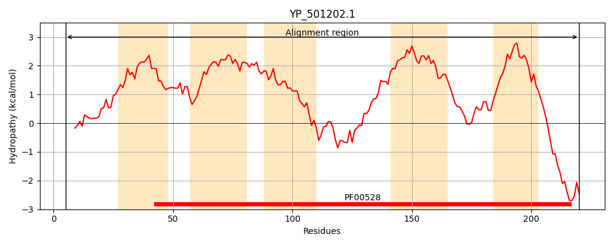
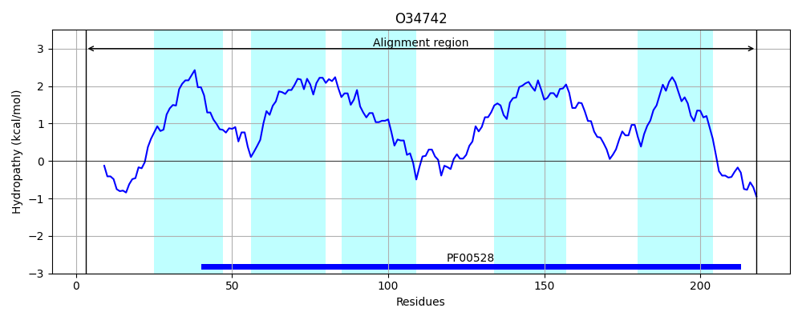
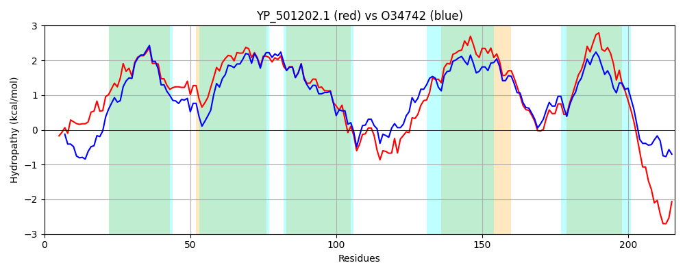

Hit Accession: O34742
Hit TCID: 3.A.1.12.4
Hit Description: gnl|BL_ORD_ID|7148 gnl|TC-DB|O34742|3.A.1.12.4 Glycine betaine/carnitine/choline transport system permease protein opuCD - Bacillus subtilis.
Mach Len: 216
e:0.000000
Query TMS Count : 5
Hit TMS Count: 5
TMS-Overlap Score: 5.400000
Predicted Substrates:CHEBI:17237;(E)-4-(trimethylammonio)but-2-enoate, CHEBI:16244;4-(trimethylammonio)butanoate, CHEBI:26272;L-proline betaine, CHEBI:3665;choline, CHEBI:3424;carnitinium, CHEBI:3073;glycine betaine, CHEBI:4756;ectoine, CHEBI:16457;S,S-dimethyl-beta-propiothetin, CHEBI:4623;(carboxymethyl)(dimethyl)sulfonium
BLAST Alignment:
| Protein Hydropathy Plots: | |
|---|---|
|  |  |
Pairwise Alignment-Hydropathy Plot: | |
|  | |